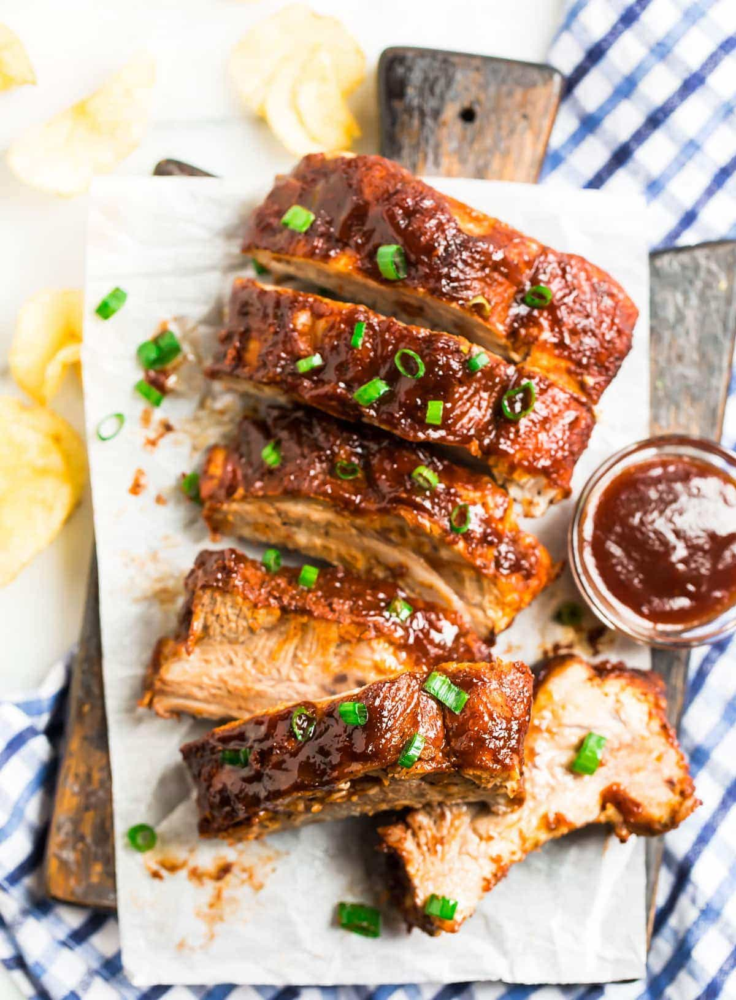

Instant Pot Ribs
Back to all recipes

Description
How to make fall off the bone Instant Pot Ribs. Easy method for baby back or spare ribs. So much faster and the sweet and savory dry rub is to die for!
This meal will take about 10 minutes to prep and 30 minutes to cook.
Ingredients
For the Ribs:
- 1 rack baby back ribs or spare ribs about 1 1/2 to 2 pounds*
- 1 cup water
- 3 tablespoons apple cider vinegar
- 1/2 teaspoon liquid smoke
- 1/4 cup Homemade Barbecue Sauce or swap your favorite store-bought sauce, plus additional for serving
For the rub:
- 2 tablespoons brown sugar
- 1 tablespoon paprika
- 1 teaspoon ground black pepper
- 1 teaspoon kosher salt
- 1 teaspoon chili powder
- 1 teaspoon garlic powder
- 1 teaspoon onion powder
- 1/4 teaspoon cayenne pepper
Steps:
- Rinse the ribs and pat them dry. If your ribs still have the thin, shiny membrane on the back, remove it. (This is easy, don't worry!) Flip the ribs over, meat-side down. Wiggle a dull knife (such as a butter knife) between the membrane and the ribs to loosen it. With a paper towel, grip the membrane and pull it away, then discard.
- In a small bowl, stir together the brown sugar, paprika, black pepper, salt, chili powder, garlic powder, onion powder, and cayenne. Rub it all over the ribs, generously coating all of the sides.
- Place the trivet (or rack) in the bottom of a 6-quart or larger Instant Pot. Pour in the water, apple cider vinegar, and liquid smoke. Place the ribs inside the pot, standing them on the trivet on their side and wrapping the rack around the inside of the pot like a circle.
- Cover and seal the Instant Pot. For baby back ribs: Cook on high (manual) pressure for 23 minutes (if you are making multiple racks and your ribs are super meaty, increase to 25 minutes). Allow the pressure to release naturally for 5 minutes, then vent to release the remaining pressure. For spare ribs: Cook on high for 35 minutes. Allow the pressure to naturally release completely (about 15 minutes). You will know it is released when the pin drops.
- Towards the end of the ribs' cook time, place a rack in the upper third of your oven and set it to broil. Line a large baking sheet with aluminum foil. Transfer the cooked ribs to the foil, then brush liberally with barbecue sauce. Place under the broiler just until the sauce begins to caramelize, about 2 minutes. Do not walk away to make sure the ribs don't burn.
Notes
- *Choose a rack that is less than 2 pounds for the most tender results. One rack will serve about 2 people. If you’d like to cook a larger amount, you can fit 2 to 3 racks into your Instant Pot. Simply stand the ribs all the way around the outside in one big circle first, then place additional rack(s) in a second circle on the inside. You can cut the slabs into smaller pieces if it helps them to fit more easily. Multiply the spice mixture for each additional rack (double for 2 racks, triple for 3, etc.).
- TO STORE: Refrigerate ribs in an airtight container for up to 4 days.
- TO REHEAT: Gently rewarm leftovers on a baking sheet in the oven at 350 degrees F or in the microwave. Slather the ribs with additional barbecue sauce before reheating if desired.
- TO FREEZE: Freeze ribs in an airtight freezer-safe storage container for up to 3 months. Let thaw overnight in the refrigerator before reheating.
Back to all recipes